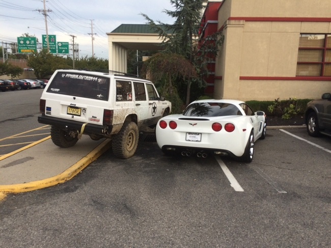
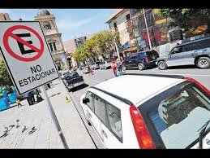

<ion-header>
  <ion-navbar>
    <button ion-button menuToggle>
      <ion-icon name="menu"></ion-icon>
    </button>
    <ion-title>&nbsp; &nbsp; &nbsp; &nbsp; Malparking &nbsp; &nbsp; &nbsp; &nbsp; <ion-icon name="bus"></ion-icon>   </ion-title> 
  </ion-navbar>
<br>
  <!-->  <h3>Ionic Menu Starter</h3> <!-->
</ion-header>

<ion-content padding>

    <ion-slides autoplay="5000" loop="true" speed="3">
        <ion-slide >
          
        </ion-slide>
        <ion-slide >
          
        </ion-slide>
        <ion-slide >
          
        </ion-slide>
      </ion-slides>
  <button ion-button color="danger">Denuncia</button> 
  <button ion-button color="dark">Dark</button>
  <button ion-button color="dark">Dark</button>   
  <button ion-button secondary menuToggle>Toggle Menu</button>

  
</ion-content>
